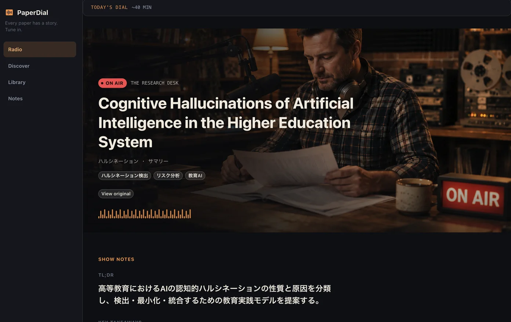

Software / Research
PaperDial
Research Radio for papers.
Every paper has a story. Tune in.
Designed and built end-to-end — from paper discovery and LLM-generated scripts to text-to-speech and playback on web and iOS.
View projectuwakuchi
I make software and music.
Small experiments in software, research, and sound.
01 / Selected project

Software / Research
Research Radio for papers.
Every paper has a story. Tune in.
Designed and built end-to-end — from paper discovery and LLM-generated scripts to text-to-speech and playback on web and iOS.
View project02 / Other practices

Music and audio projects.